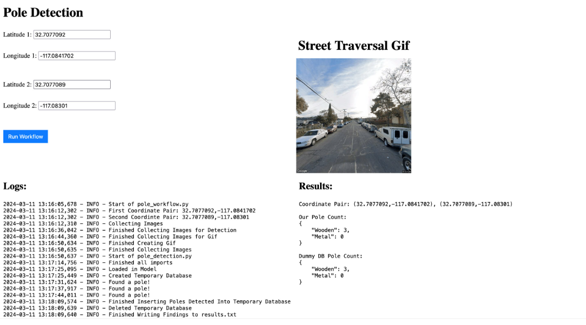

Enhancing Utility Pole Monitoring with Computer Vision
Senior project with SDG&E as an industry partner
Project Details / Background
In order to minimize wildfire risk, understading the assets within the region and having correct data is crucial. However, sending technicians out to gather and update the database is time consuming and costly. In order to reduce the cost, we developed the workflow that can be utilized at SDG&E to automate the process of data quality control.
I was in charge of data collection code, street traversal algorithm and gathering images of the street using Google Street View, creting GIF using collected image, overcounting prevention algorithm, and finetuning DETR model.
Image Gallery

This is the demo webiste where user can input 2 coordinates(start and end of the street) to run the workflow
 This is how we collected the training data: per pole, used 3 different zooms and 5 different angles whcih resulted 15 images total per pole.
This is how we collected the training data: per pole, used 3 different zooms and 5 different angles whcih resulted 15 images total per pole.
Sample output of the traversal results after detection vs SDG&E's current database